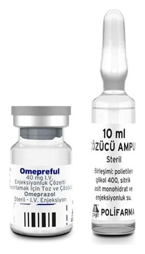

Omepreful 40 mg IV Enjeksiyonluk Çözelti Hazırlamak İçin Toz Ve Çözücü, 1 Adet

Ne için kullanılır
KT · Bölüm 1OMEPREFUL “proton pompası inhibitörü” olarak bilinen ilaçlardan biridir. Midenizdeki asit oluşumunu azaltır. OMEPREFUL, küçük bir cam şişe (flakon) ve çözücü ampulden oluşur. Her bir flakon 40 mg omeprazole eşdeğer miktarda 42,6 mg omeprazol sodyum içerir. Her ampul enjeksiyonluk çözücü içerir. İlacınız aşağıdaki durumların tedavisinde kullanılır: • Asidin mideden yemek borusuna kaçışına bağlı yemek borusunda iltihaplanma ve ağrı (reflü özofajit ve özofajiyal reflü hastalığında), • Bağırsakların üst kısmındaki ülser (duodenum ülseri), yemek borusundaki ülser (peptik ülser) veya midedeki ülser (gastrik ülser), • Non-steroidal anti-inflamatuvar (hormon içermeyen iltihap giderici) ilaçların neden olduğu mide ülseri ve bağırsakların üst kısmındaki ülserler, • Zollinger-Ellison sendromu olarak isimlendirilen, midede aşırı asit olması durumlarında.